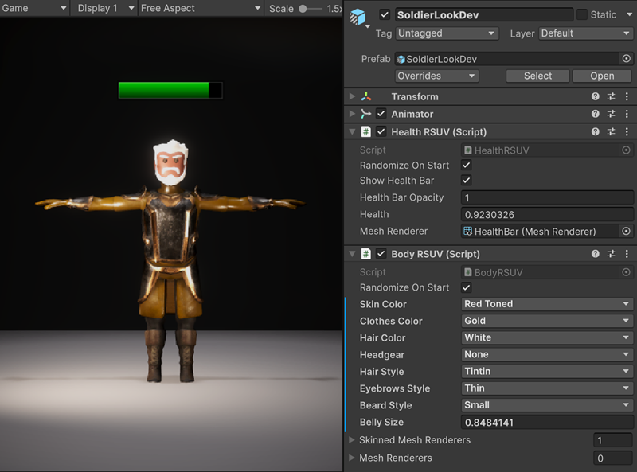
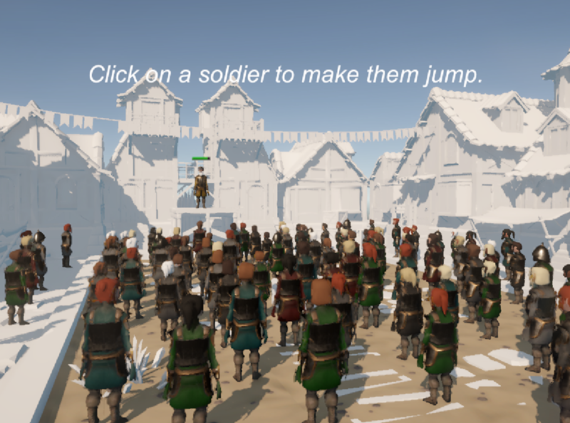

Use the Renderer ShaderA program that runs on the GPU. More info
See in Glossary User Value sample in your URP or HDRP project to experience the implementation and effects of the RSUV feature through different preset scenesA Scene contains the environments and menus of your game. Think of each unique Scene file as a unique level. In each Scene, you place your environments, obstacles, and decorations, essentially designing and building your game in pieces. More info
See in Glossary.
The sample includes two scenes and some helpers to streamline the process of packing/unpacking data with RSUV.
| File | Description | Path |
|---|---|---|
Agora.unity and LookDev.unity
|
Each scene contains a Sample Description GameObject explaining in detail how it works and how to set it up properly. See the scene details in the next sections. | Assets/Samples/<your render pipeline>/<version>/Renderer Shader User Value Samples/Scenes |
HelpersRSUV.cs |
Contains C# functions to help pack data into a uint. (CPU side). | Assets/Samples/Scriptable Render Pipeline Core/<version>/RendererShaderUserValue_Common/Scripts |
HelpersRSUV.hlsl |
Contains HLSL functions to decode data directly in a shader graph Custom Function node. | Assets/Samples/Scriptable Render Pipeline Core/<version>/RendererShaderUserValue_Common/Scripts/CustomFunctions |

This scene features an animated soldier with one simple idle animation and two components dedicated to pass data to the skinned meshThe main graphics primitive of Unity. Meshes make up a large part of your 3D worlds. Unity supports triangulated or Quadrangulated polygon meshes. Nurbs, Nurms, Subdiv surfaces must be converted to polygons. More info
See in Glossary renderer. Those components use the RSUV feature and allow you to customize the rendering of the soldier through different techniques:
The Health RSUV component uses a simple quadA primitive object that resembles a plane but its edges are only one unit long, it uses only 4 vertices, and the surface is oriented in the XY plane of the local coordinate space. More info
See in Glossary outside the soldier geometry. The health value and bar opacity are passed with RSUV. The health of the character is renderered in the shader by manipulating UVs and sampling a gradient.

This scene includes 100 instances of the soldier from the LookDev scene.
In this scene, the soldier uses a simple MeshRenderer and a Vertex Animation 2D Texture Array instead of the animator and SkinnedMeshRenderer combo because GRD is not compatible with animators and skinned meshes. Having multiple instances of them would break the batching, even with RSUV.
This version of the soldier with Mesh RendererA mesh component that takes the geometry from the Mesh Filter and renders it at the position defined by the object’s Transform component. More info
See in Glossary and Vertex Animation Texture (VAT) uses only one draw call per material (so only 4 draw calls for the whole scene) and is suitable to render crowds, for example. For that to work, make sure GRD is properly set up.
Also, the VAT is a texture array and not a single texture, which allows to change the animation index to target another texture in the texture array. Here, one texture is for the idle animation, and another one is for the jump animation.